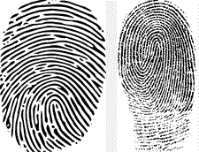

<div id="jsn-maincontent" class="span9 order1  row-fluid">
					<div id="jsn-maincontent_inner">
						<div id="jsn-centercol"><div id="jsn-centercol_inner">
									<div id="jsn-mainbody-content" class=" jsn-hasmainbody">
								<div id="jsn-mainbody-content-inner1"><div id="jsn-mainbody-content-inner2"><div id="jsn-mainbody-content-inner3"><div id="jsn-mainbody-content-inner4" class="row-fluid">
								
										
								
								<div id="jsn-mainbody-content-inner" class="span12 order1 ">
		
										<div id="jsn-mainbody">
										<div id="system-message-container">
	</div>

										<div class="item-page" itemscope itemtype="https://schema.org/Article">
	<meta itemprop="inLanguage" content="en-GB" >
	
		
						
		
	
	
		
								<div itemprop="articleBody">
		<p></p>
<h1 style="text-align: center;">Biometrics</h1>
<p><strong>Introduction</strong><br>Many people have many different accounts these days. Trying to remember them all is very difficult for a lot of people, especially as you get older, and especially if you follow 'good practice' and change passwords regularly. One method that can be used to keep passwords is to use <a href="http://keepass.info/" target="_blank">a password manager such as KeePass</a>. This stores all of your passwords and other details about accounts in one place in an encrypted file. To access any of your accounts, you have to enter in a master key. As long as you can remember one key, you can get back all of the details about all of your accounts. Having to use passwords that we could forget is not an ideal method of accessing accounts. Neither are methods that involve having 'smart cards' or physical keys, which could be forgotten, lost, stolen or cloned. It would be far better if we didn't have to remember anything and could just use a part of our body as the way to prove who we are when we need to. This is the idea behind <em><strong>biometrics</strong></em>.</p>
 
<p><strong>Unique identifiers</strong><br>Certain characteristics about each individual are unique. For example, our fingerprints are unique. The pattern of blood vessels in our eyes is unique, as is the iris in an eye, our voice pattern, our face pattern and our hand geometry. Our DNA profile is also unique. If any of these characterisitcs can be captured accurately and reliably, and done so in a timely fashion, they could be used to verify who somebody is. They wouldn't need to remember and enter in a password. They wouldn't need to provide three forms of ID, use a smart card or use a key. Biometrics can be used either for <strong><em>identification</em></strong>, by taking a reading and then searching for matches in a database, or for <em><strong>verification</strong></em>, by taking a reading to confirm that someone is who they already have said they are. There are always concerns with biometric methods of verification,relating to what data is being stored, who has access to it, whether it is encrypted and safe and whether it could be hacked and used for other purposes. Regardless of these concerns, biometric technology is increasingly being used for verifying people in all sorts of circumstances.</p>
<p><strong>Fingerprint scanning</strong><br>With this system, users' fingerprints are scanned and stored in a database in advance of the system being used. When a user needs to be verified, they place their finger on a scanner. The scanner scans the finger, looks for a match in the database and then usually displays information about that person, including a photograph. Assuming that the operator of the system is happy that a correct match has been made, they can then let the person have access to the resources of the system.</p>
<p>Fingerprint scanning is used in schools, to give youngsters access to the canteen. Parents can top-up an student's account online. The student can then order food and pay just be having their finger scanned. Potentially, parents could get a breakdown of what their child ordered and when, or could block certain types of food from being bought, and can top-up the account as necessary. Privacy is maintained so that if, for example, a youngster has free school meals, that student has to go through the same process of verification as everyone else without any possible embarrassment. This system can also be used for access to library facilities, photocopying, at customs to record who enters and leaves the country, logging in to laptops and to gain access to restricted buildings or rooms.</p>
<p>Fingerprint scanning is well established, is easy to set-up and use, needs well-established computer technology rather than complex and costly technology and most importantly, has a high degree of accuracy. There are also standards in use that make it easy for companies to develop software and hardware to make use of this technology. For those reasons, it is the most widely-used method of biometric verification. There have been some concerns regarding the security, storage and uses of biometric data, especially when it comes to recording the biometric data of children, but systems allow opt-outs and few people decline to use them altogether.</p>
<p><strong>Retina scanning and iris scanning</strong><br>Scanning a retina or scanning an iris requires specialised equipment that can be costly. Both methods are considered intrusive by some people and not everyone thinks they are safe yet. However, when either method is used, they highly accurate and most security experts agree that both retina patterns and iris patterns cannot be duplicated, so they are secure methods of verification. This is one reason they are being increasingly used for border control areas, airports and in the fight against terrorists.</p>
<p><strong>DNA scanning</strong><br>Used extensively in the fight against crime, DNA scanning is a fool-proof way of identifying someone although it is highly intrusive. It is a costly method of verification and takes days or weeks sometimes to complete. It would not be a useful system to verify people at a border crossing, for example!</p>
<p><strong>Facial recognition</strong><br>This method uses a camera to scan a person's face. The digital image is then compared with face scans in a database. It is not thought to be as accurate as some other methods in all circumstances because the digital image taken is dependent upon the quality of the camera used, the lighting, the ever-changing physical attributes of each person and so on. Some systems measure points between facial landmarks and use these to construct a facial profile and this is considered an accurate method of facial verification and these do not tend to change for most people. Facial recognition is used to pick criminals out from groups, for example, known hooligans from football crowds or terrorists from people passing through airports.</p>
<p><strong>Hand geometry</strong><br>This system requires specialist scanning equipment, which can be expensive. Although highly accurate, it is problematic to use for people with certain kinds of hand problems, such as severe arthritis.&nbsp;&nbsp;</p>
<p style="margin-top: 10px; line-height: 16.3636360168457px;"><strong>Prerequisites of biometric data</strong><br>There are a number of prerequisites that have to be met with any biometric data being considered for use in identification and verification systems.</p>
<ul>
<li style="list-style-type: none;">
<ul>
<li style="margin-bottom: 10px; line-height: 16.3636360168457px;">The data collect should be unique for each individual.</li>
<li style="margin-bottom: 10px; line-height: 16.3636360168457px;">Everyone has to have the data that is going to be collected.</li>
<li style="margin-bottom: 10px; line-height: 16.3636360168457px;">There is a general acceptance that it is okay to collect the data; it shouldn't be perceived as intrusive to collect.</li>
<li style="margin-bottom: 10px; line-height: 16.3636360168457px;">The data should be stored in a way that doesn't violate a notion of privacy.</li>
<li style="margin-bottom: 10px; line-height: 16.3636360168457px;">The data should vary little over time.</li>
<li style="margin-bottom: 10px; line-height: 16.3636360168457px;">It should be difficult to impossible to manufacture, forge or fake the data.</li>
<li style="margin-bottom: 10px; line-height: 16.3636360168457px;">You should be able to measure the data.</li>
<li style="margin-bottom: 10px; line-height: 16.3636360168457px;">You should be able to store the data in a way that allows it to be searched and processed.</li>
<li style="margin-bottom: 10px; line-height: 16.3636360168457px;">You should be able to compare data files.</li>
</ul>
</li>
</ul>
<p><strong>Capturing, storing and processing biometric data</strong><br>The whole process of biometric verification requires that first of all, users have to be signed-up to the system. They have to agree that their biometric data can be taken, stored and used for the purposes of identification and verification. Then they have to have their data taken. Raw biometric data has to be captured using a specialist device, such as a camera or scanner that is fit for the purpose. From the raw data, a biometric profile has to be extracted and stored in a searchable database using a mathematical representation of the sample. The original raw biometric data can usually be discarded at this point.</p>
<p>When a scan is taken for identifcation or verification, a similar process is followed. Raw biometric data is collected. A mathematical representation of the raw data is constructed. The original raw data is discarded but this time, however, the mathematical representation of the biometric data is compared to the files stored in the database. Searches can be done for 'similar' matches, so that further investigations can be made using a much smaller list, or a search for an exact match, which can be used to verify a user from other facts that they have already revealed about themselves.</p>
<p></p>	</div>

	
							</div>

									</div>
				
							</div>
							
				        							
							
							</div></div></div></div></div>			
							
							
		        				</div></div> 
				</div></div>